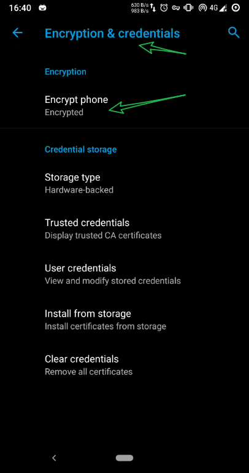
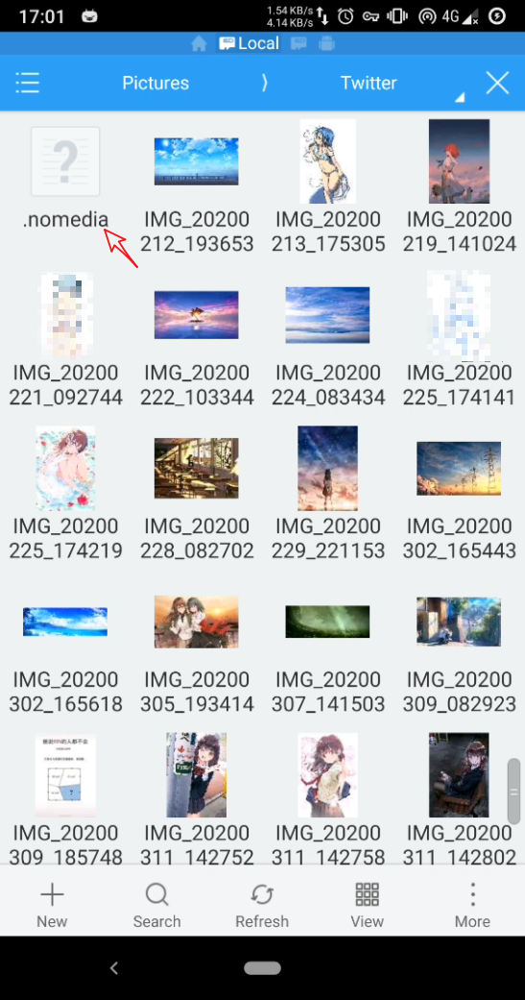

免责声明: 这一篇只是总结我这些年的使用安卓手机的一些经验，并不一定准确。有不足之处，恳请指正
这里演示使用的是 安卓手机， 并且系统是魔趣安卓9.0
手机全加密
首先，无论怎样，首先第一件事: 加密你的手机
我不知道第三方的安卓手机厂商，有没有启用安卓系统的加密功能。但是，建议检查一下，并开启。
魔趣默认没有开启加密。
开启加密的好处
开机必须用
键盘密码解锁，无法使用指纹解锁
(这个好处就不需要说明了吧，睡觉前重启一下手机。就算女朋友趁你睡了用你的手来解锁，也没用)在不知道密码的情况下，无法通过第三方recovery来获取手机的数据
(手机丢了，数据别人也看不到)
加密的坏处:
- 在开机后未解锁，无法正常使用SIM卡，闹钟无法工作
- 如果要升级系统，可能需要先解密DATA分区，要求你的第三方recovery必须具备解密功能
- 一堆莫名奇妙的bugs。 (因为我是用的魔趣社区的包，老实说，稳定性欠佳)
- 开机速度会有一点慢。但是进入系统后，跟普通使用场景并无二样(个人体验)
- 开启加密后，是不可逆的。 意味着，手机无法再回到加密前的状态
尽管开启加密有很多小毛病，但是我还是要使用加密的功能。单单安全这个因素，缺陷我可以视而不见。
一般在 setting 里面， 有个 encryption 的选项，按照提示操作就行，确保手机电量充足

隐藏图库某些图片
这个就不需要我说明了，谁也不想打开图库，有一堆不想让别人看见的相片。
有时候，看一个人的电脑桌面或者一个人的手机图库。就能大概知道他/她是一个什么样的人。 所以我平时桌面图标都是隐藏的，只有一张壁纸。
说了一些废话，下面就说说怎么隐藏你手机图库的图片
看到上图， 里面有一个 .nomedia 的文件
没错，如果你的这个文件夹里面的图片不想出现在图库里，添上这一个文件即可。这个文件的作用是告知系统，不需要扫描这个文件夹下的文件，没扫描到，自然不会出现在图库里
手机多开用户
说这个功能之前，先看下面的图片，虽然可能有些双标的意思，但是你能了解到多用户是很有用的

现在安卓的多用户功能基本是标配。 魔趣的多用户，用起来没有上图说的那么方便(不知国内其他ROM厂商优化情况是怎样)
这个功能我也不怎么用，因为两个账号肯定会多占用更多的硬件资源，管理起来更麻烦，而且我也没有搞清楚它具体的原理，哪些权限是共用的? 不要因为有多账户，就开一个用户给他人用你的手机，这个是很危险的!
下图是增加用户的方法
百度云手机
百度最近发布了一项新的云服务，具体报道如下
https://tech.sina.com.cn/i/2020-04-15/doc-iircuyvh7940769.shtml
简单理解: 就是你在云上多了一台手机
官网地址:
我看了一下，申请试用的网页都打不开，还需要备案，国内传统陋习。 我就告辞了，有需要自己去研究，应该不难。
只要百度不倒闭，你钱包资金充足，这完全是个优秀的解决方案
防窥膜
在朋友的苹果机上见过，防偷窥效果相当出色，只有在特定的角度能看清楚屏幕，显示效果也可以接受。 在其他角度，完全是黑麻麻一片。但是这个方案我也没用过，我喜欢裸奔。。。
物理隔离(多个设备)
我觉得更好的方法是，不同的设备做不同的事。
譬如 iPad 来娱乐， 手机用来微信， PC 用于日常事务处理。甚至你可以整一个诺基亚，专门用来短信电话，你懂我意思不?
手机里面内置了一堆的传感器，相比于 PC，毫无安全性可言。 有一条就是针对微信步数来的。
要是你 かのじょ 问你：
大晚上的，干嘛去了？
说要早睡，结果微信步数蹭蹭上涨，不是梦游就是绿了
如今的很多人，所有的事情都交给手机，无论是获取资讯，还是沟通交流，甚至编辑 excel。我是很佩服最后一种，在一小块屏幕里指指点点，居然能忍受得了。
如果使用 PC，你能使用得骚操作就多了。 隐私窗口，虚拟机，文件隐藏。 有能力的整个 Ubuntu，一般女生哪里能操作？
使用匿名通讯软件
骚年，你可知道 telegram snapchat 这类加密，阅后即焚软件?
什么，你说无法访问？ 你的姿势水平还不够高啊
后记
好，废话说了怎么多，那问题来了，女朋友去哪里领?
写这篇的目的，只是图大家一个欢乐而已，同时希望各位的安全意识能够提高一点。 还有其他的招，像查看美团，支付宝，滴滴的记录。 这里，有多个账号的优势就体现出来了。 但是，我要说但是了，作为一名绅士，你出门不带个钱包吗？你钱包没有现金的吗？你可知现金是很难追踪来源和花费的，要不怎么有人家里屯了上亿的现金？
你们要明白，想查看你手机的人，不仅有 かのじょ，还有无处不在的 Big Brother
安全与便利不可兼得，一味图便利，根本毫无安全可言